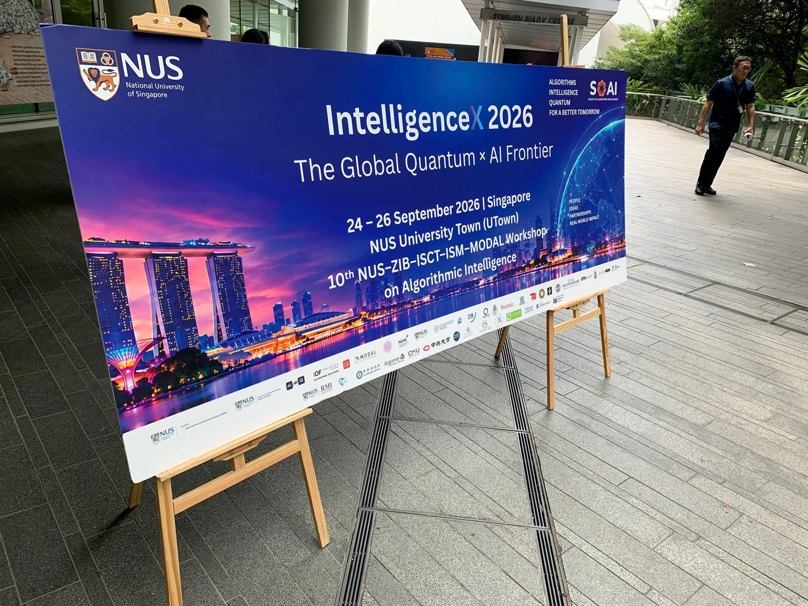
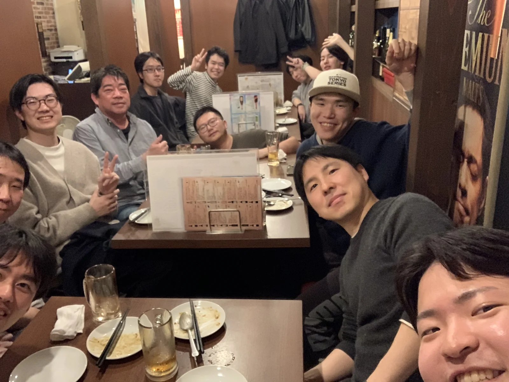

24–26 SEPTEMBER 2026 · SINGAPORE
在新加坡分享研究
三歩一尚志于2026年9月24日至26日在新加坡国立大学举办的第10届 NUS-ZIB-ISCT-ISM-MODAL Workshop on Algorithmic Intelligence上发表研究。国际交流让学生有机会阐述自己的想法，并接触新的问题。
研究在讨论、共同经历以及不同领域的交流中不断成长。

三歩一尚志于2026年9月24日至26日在新加坡国立大学举办的第10届 NUS-ZIB-ISCT-ISM-MODAL Workshop on Algorithmic Intelligence上发表研究。国际交流让学生有机会阐述自己的想法，并接触新的问题。

2026年2月，实验室成员参加了富士通参访。通过参观历史馆和交流活动，大家在日常研究之外分享体验。
不必带着一个已经完成的研究构想加入。我们共同将兴趣转化为明确的问题。
学习研究所需的数学、机器学习和编程知识。
阅读论文，理解代码，并运行实验。
分析方法何时有效、何时失效，以及背后的原因。
实现自己的想法，公平比较，并清楚地呈现证据。
欢迎就加入实验室和研究合作展开交流。